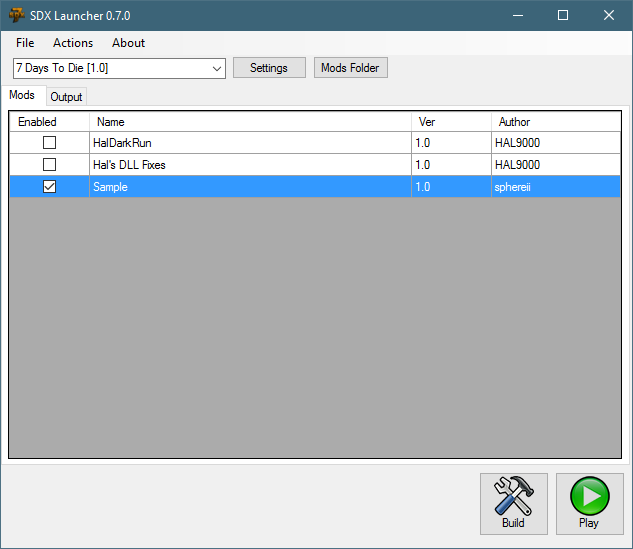
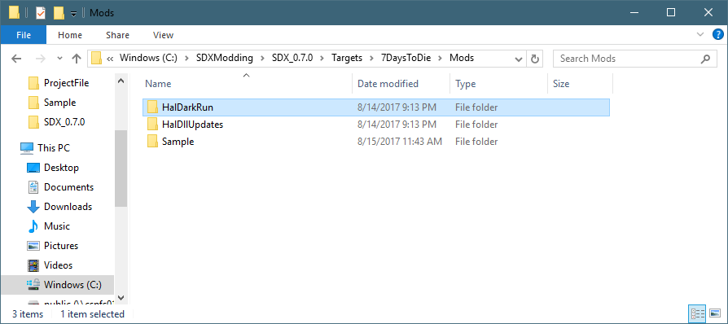
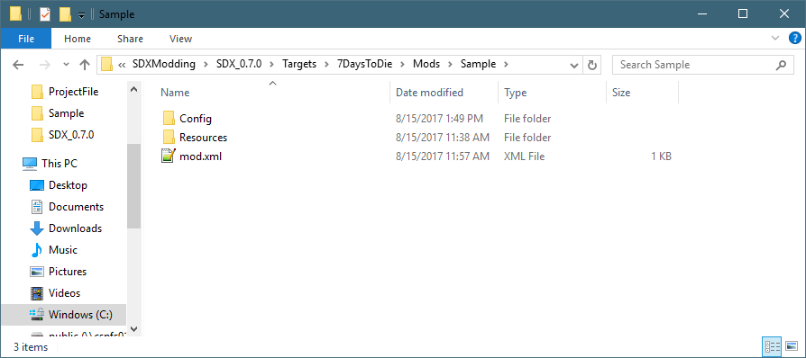
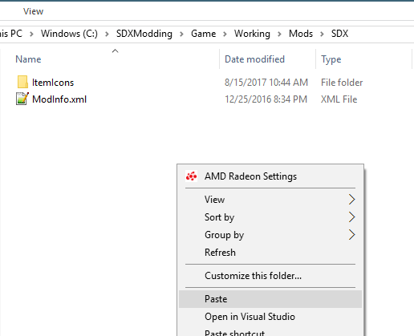
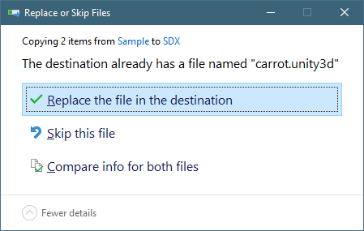
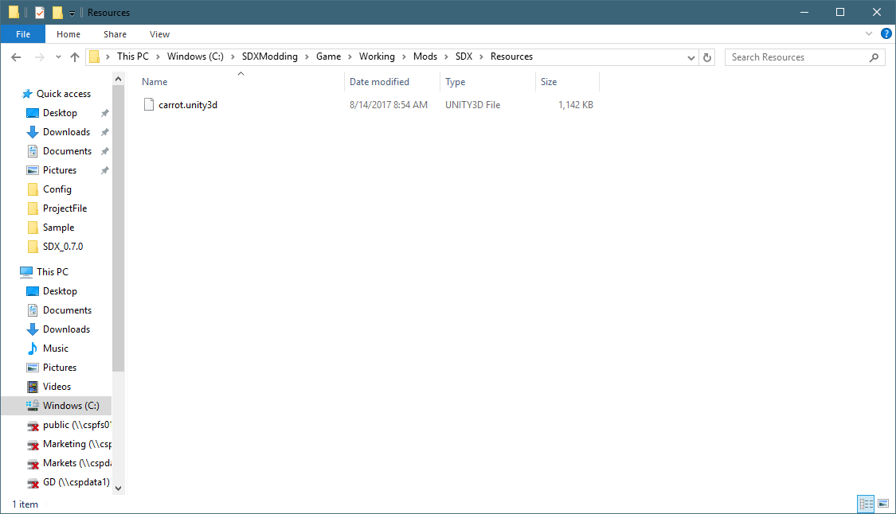

Once you have completed all the steps in the "Building for the first time" option, it's time to trigger your first SDX compile!
Check the "Sample" mod.

And click on Build
When SDX finishes compiling, scroll up and review the log file for this:
INFO: Highest item id: 1465 INFO: Highest block id: 2041 Apply mod config patch: Sample Applying patch: C:\SDXModding\SDX_0.7.0/Targets\7DaysToDie\Mods\Sample\Config\Sample.xml... AddXmlByXPath: /items Found 2 EVENT: Run sub task: Run Xml Patcher mod scripts ERROR: No assembly from BuildAndRunPatchModsTask INFO: Auto assigning item ids... INFO: PostProcess highest ItemID: 1466 |
Note: As mentioned before, the "ERROR: No assembly from BuildAndRunPatchModsTask" is a not a concern, since there is no Mods scripts yet enabled.
SDX is now compiled into your Working copy of the game. However, it does not move the Resources over.
Click on the "Mods Folder" in the SDX Launcher and let it open up Explorer.

In our example, we only compiled the Sample mod, so double click on Sample.

Right click on the Resources folder, and select Copy.
In Explorer, go to the Working folder: "C:\SDXModding\Game\Working"
If SDX compiled successfully, it will have creates a Mods\SDX folder. Double click on the Mods folder, then double click on SDX.
Right click on Explorer, and select Paste to copy the Resource folder in.

If the Resource folder already exists, you will be prompted to "Replace or Skip Files". Click on "Replace the file in the destination"

Your Resource folder should look like this now:

Created with the Personal Edition of HelpNDoc: Easily create Help documents